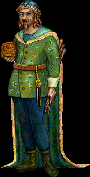

|  |
A remarkable man fallen upon a tough life, Wulfgang was born on the mainland and raised in the persecuted secret society of the last Riija School. Besides that he somehow escaped to this island and established his trading post, little else is known about Wulfgang’s past.
|
||||||||